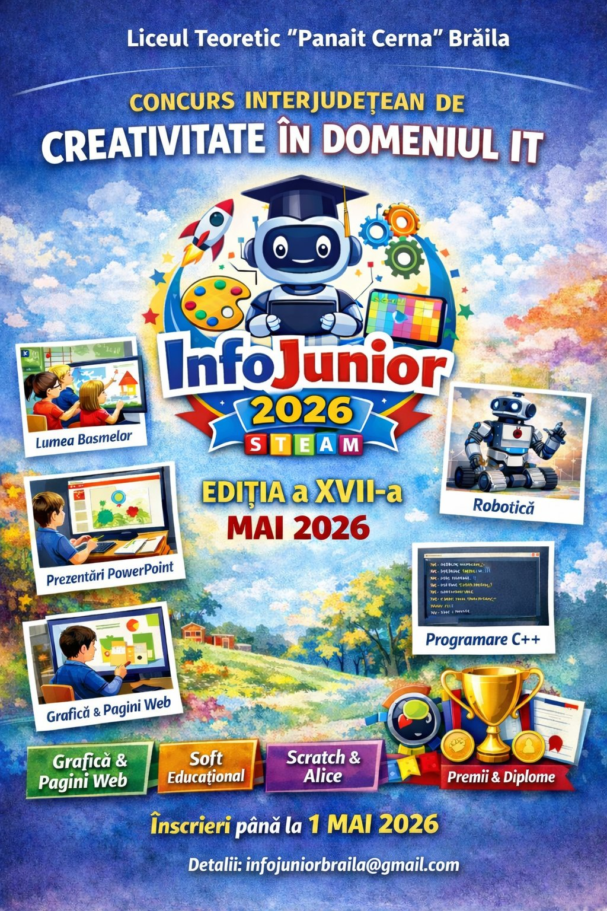

Concurs interjudețean de creativitate în domeniul IT
Liceul Teoretic "Panait Cerna" Brăila

InfoJunior este un concurs interjudețean de creativitate în domeniul IT cu tema STEAM, organizat de Liceul Teoretic „Panait Cerna" Brăila, înscris în lista proiectelor de educație extrașcolară interjudețene.
Concursul vizează elevi din învățământul primar și gimnazial și își propune ridicarea nivelului de pregătire în informatică și TIC, dezvoltarea creativității și a spiritului competitiv.
Toate prezentările elevilor sunt disponibile pe Google Drive. Dă click pe butonul de mai jos pentru a le vizualiza sau descărca.
Deschide în Google DriveSe deschide într-o fereastră nouă · Nu necesită cont Google
📍 Liceul Teoretic "Panait Cerna" Brăila
📧 infojuniorbraila@gmail.com
🏆 Premii: Premiul I, II, III + Mențiuni per secțiune
📜 Diplome pentru toți participanții
🎯 Poziția 321 în lista proiectelor OMEC
📚 Cicluri: primar și gimnazial
🗺️ Nivel: interjudețean
🔗 Formular de înscriere